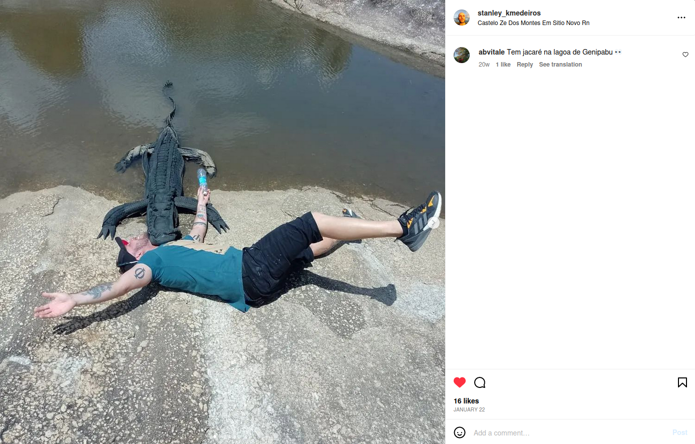
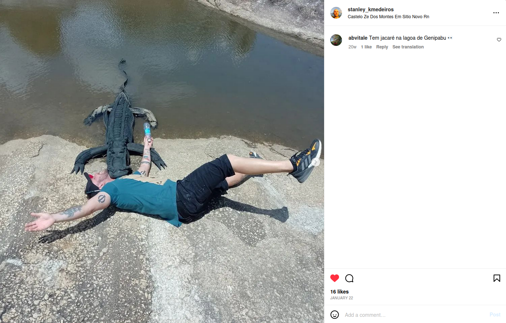

O professor Stanley atua no IFRN - Campus Ceará-Mirim dando aula para alunos de ensino médio e superior. Sua disciplina de entrada para a instituição é filosofia. Atualmente ele ministra suas aulas nas segundas-feirias e terças-feiras para as turmas PJD-3M, EBM-3M, EBM-1V, INFO-3V, EBM-2N e LICMAT-5N
Sobre
|
|
|
Áreas de Interesse
- Filosofia
- Filosofia política
- Psicologia
- História
- Arquitetura
Disciplinas
| Horários do professor | |||
|---|---|---|---|
| Nome da disciplina | Turma | Horário | Dia |
| Filosofia III | PJD-3M | 07:00 às 08:30 | Quarta-Feira |
| Filosofia | EBM-3M | 08:50 às 10:20 | Quarta-Feira |
| Filosofia | EBM-1V | 13:00 às 14:30 | Quarta-Feira |
| Filosofia | EBM-3V | 14:50 às 16:20 | Quarta-Feira |
| Filosofia | INFO-3V | 13:00 às 14:30 | Terça-Feira |
| Filosofia, Ciência e Tecnologia - Subsequente | EBM-2N | 19:00 às 20:30 | Terça-Feira |
| Epistemologia da Ciência | LICMAT-5N | 20:45 às 22:15 | Terça-Feira |
Publicações
 

Educação
-
Graduação em Filosofia
Período: 2001 - 2005
Universidade Federal do Rio Grande do Norte -
Mestrado em Filosofia
Período 2006 - 2008
Universidade Federal da Paraíba -
Doutorado em Filosifa
Período: 2009 - 2013
Universidade Federal da Paraíba -
Graduação em andamento em Psicologia
Período: 2020 - Atual
Universidade Potiguar, UnP -
Graduação em andamento em Bacharelado em Psicologia
Período: 2022 - Atual
Centro Universitário FACEX